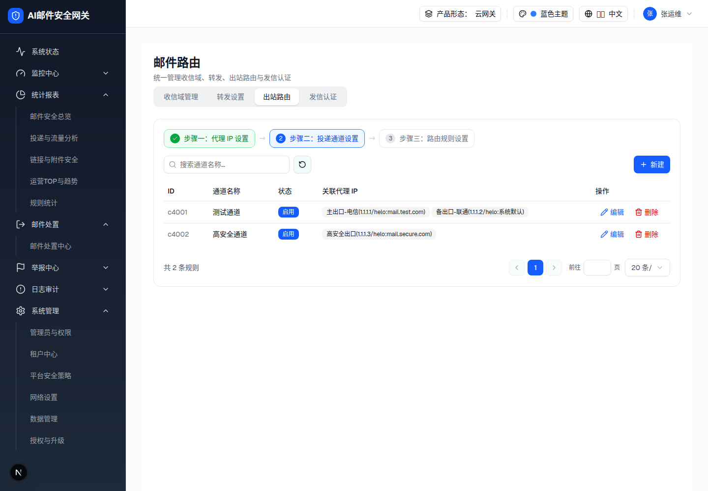
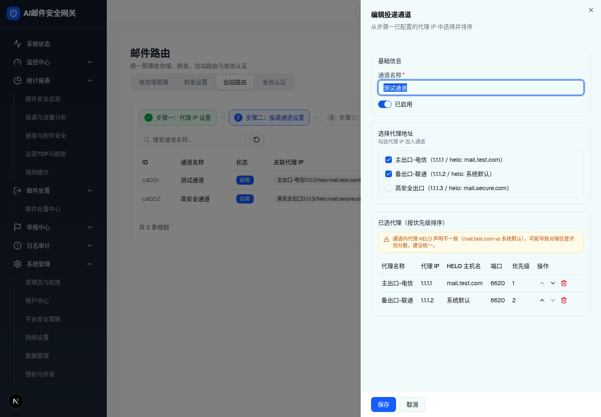
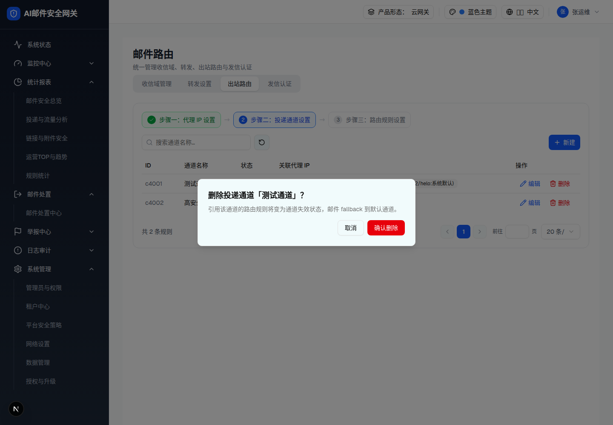

| 所属组件 | 2.5 出站路由 Tab · 步骤二 |
| 触发路径 | 步骤条「步骤二：投递通道设置」（proxies>0 才可点，否则 Lock+Tooltip）→ 通道列表；「新建 / 编辑」→ 抽屉；「删除」→ #delete |
预览可操作：搜索过滤通道名称；「编辑」在本页 6b 展示；步骤条可回步骤一（跳主文件）。注意步骤二工具栏无筛选按钮（未配置 filterContent）。
| ID | 通道名称 | 状态 | 关联代理 IP | 操作 |
|---|---|---|---|---|
| c4001 | 测试通道 | 启用 | 主出口-电信(1.1.1.1/helo:mail.test.com)备出口-联通(1.1.1.2/helo:系统默认) | |
| c4002 | 高安全通道 | 启用 | 高安全出口(1.1.1.3/helo:mail.secure.com) |

| 列 | 规格（浏览器实测） |
|---|---|
| ID / 通道名称 / 状态 | c4001…；font-medium；StatusBadge |
| 关联代理 IP（max-w-360px） | secondary 徽章组，每枚「名称(代理IP/helo:HELO或系统默认)」；引用失效代理 → 红字「代理已删除」outline 徽章 |
| 操作（w-160px） | 「编辑」/「删除」（无探测） |
| 空态 | 「暂无通道，建议先配置自定义通道」+ 立即添加 |
| 比对项 | demo 实际 DOM | 嵌入的 HTML | 是否一致 |
|---|---|---|---|
| 步骤条态 | 步骤一 border-green-300 bg-green-50 + Check 图标；步骤二 active 蓝 | 同 | 一致 |
| 数据行数 | 2；第 1 行 2 枚代理徽章、第 2 行 1 枚 | 同 | 一致 |
| 工具栏 | 无「筛选」按钮（filterContent 未配置） | 同 | 一致 |
| 节点数 | 101 | 101 | 一致 |
预览可操作：勾选/取消「选择代理地址」复选框 → 「已选代理（按优先级排序）」表实时增删行；↑↓ 调整顺序（边界禁用）、行内垃圾桶移除；已选代理 HELO 不一致（mail.test.com vs 系统默认）时显示橙色警告——取消勾选「备出口-联通」观察警告消失；通道名称必填/唯一校验。

| 元素 | 规格（浏览器实测） |
|---|---|
| 通道名称 * | 「请输入通道名称」/「通道名称已存在」 |
| 启停 | Switch「已启用/已禁用」 |
| 选择代理地址 | desc「勾选代理 IP 加入通道」；带边框滚动容器（max-h-44）逐行 Checkbox「名称（IP / helo: 值）」；空选错误「请至少选择一个代理 IP」（阻断） |
| 已选代理表 | 条件渲染（选中>0）；列：代理名称/代理 IP/HELO 主机名/端口/优先级（=行序）/操作（↑↓ 移动 + 移除）；勾选顺序即初始优先级 |
| HELO 一致性 | 已选代理 HELO 声明去重后 >1 种 → 橙色警告「通道内代理 HELO 声明不一致（A vs B），可能导致对端信誉评估分散，建议统一。」；保存不阻断，但 Toast 再次提示同文案要点 |
| 底部操作 | 「保存」/「取消」；成功 Toast「投递通道已添加/已更新」 |
| 比对项 | demo 实际 DOM | 嵌入的 HTML | 是否一致 |
|---|---|---|---|
| 复选列表 | 3 项，前 2 项 checked | 同 | 一致 |
| 已选排序表行数 | 2（主出口-电信 优先级1 / 备出口-联通 优先级2）；行1 ↑ 禁用、行2 ↓ 禁用 | 同 | 一致 |
| HELO 警告 | 橙色条（mail.test.com vs 系统默认，条件渲染 heloSet.length>1） | 同 | 一致 |
| 节点数 | 101 | 101 | 一致 |
预览可操作：「取消」/「确认删除」→ Toast「投递通道已删除」。
引用该通道的路由规则将变为通道失效状态，邮件 fallback 到默认通道。

| 比对项 | demo 实际 DOM | 嵌入的 HTML | 是否一致 |
|---|---|---|---|
| 标题动态名 | 「测试通道」 | 同 | 一致 |
| 节点数 | 7 | 7 | 一致 |